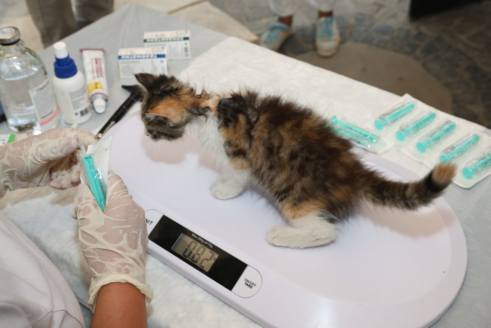

رعاية برفقاهتمام يضع راحة الحيوان أولًا
عيادة بيت فالي البيطرية
رعاية تحبها…
وراحة يشعر بها حيوانك
مساحة للتعريف بخدمات الرعاية البيطرية والعناية بالحيوانات الأليفة. نؤمن أن الاهتمام يبدأ بالمعرفة والرفق.
هذه صفحة تعريفية ثابتة؛ لا تُرسل حجوزات أو طلبات.
إرشاد واضحمعلومات تساعدك على اتخاذ القرار
خدمات متنوعةتعرف على مجالات الرعاية المتاحة

رعايةبحبواهتمام
من نحن
رفيقك يستحق عناية تليق به
بيت فالي مساحة للرعاية البيطرية والعناية بالحيوانات الأليفة. صُممت هذه الصفحة لتعرّفك على مجالات الخدمة وتسهّل عليك استكشاف المعلومات الأساسية.
بيانات العنوان وساعات العمل وأرقام التواصل لم ترد معتمدة في ملفات المشروع، لذلك لم ندرج معلومات غير مؤكدة.
تابع التحديثاتمجالات الرعاية
خدمات تهتم بصحة أليفك
تعرّف على المجالات المذكورة في بيانات الموقع. يرجى التواصل مع العيادة للتأكد من توفر أي خدمة قبل الزيارة.
01
الكشف والمعاينة
فحص سريري لتقييم الحالة الصحية ومتابعة الوزن والنمو، مع إرشادات للعناية المنزلية.
الرعاية العامة02
التطعيمات والوقاية
إرشاد حول جداول التطعيم والوقاية الدورية المناسبة لعمر الحيوان ونمط حياته.
الوقاية والمتابعة03
الفحوصات والتحاليل
فحوصات يوصي بها الطبيب لدعم التقييم السريري، مع شرح النتائج وخطوات المتابعة.
التشخيص والمتابعة04
العناية والنظافة
عناية بالفراء والأظافر والأذنين بأسلوب لطيف يراعي راحة الحيوان.
العناية اليوميةالأوصاف أعلاه مقتبسة من بيانات نموذج المشروع، وليست تأكيدًا بأن كل خدمة متاحة حاليًا.
الرفق أساس الرعاية
رعاية يومية
خطوات بسيطة تصنع فرقًا
- ✓ احرص على توفير ماء نظيف وطعام مناسب.
- ✓ تابع أي تغيّر ملحوظ في النشاط أو الشهية.
- ✓ استشر طبيبًا بيطريًا عند ظهور أعراض مقلقة.
هذه إرشادات عامة ولا تغني عن استشارة الطبيب البيطري.
ابقَ على تواصل
تابع أخبار بيت فالي
لأن رقم الهاتف والعنوان غير متوفرين ضمن البيانات المعتمدة، يمكنك متابعة حساب إنستغرام المدرج في ملفات المشروع لمعرفة آخر التحديثات.
حساب بيت فالي على إنستغراميرجى التأكد من الحساب وبيانات العيادة قبل الاعتماد عليها.
تنويه مهم عن هذه النسخة
هذا الموقع صفحة تعريفية ثابتة على GitHub Pages. الحجز الإلكتروني، المتجر، تتبع الطلبات، تسجيل الدخول ولوحة الإدارة غير مفعّلة هنا لأنها تحتاج إلى خادم وقاعدة بيانات. الصور توضيحية، وبيانات العيادة التشغيلية تحتاج إلى اعتماد.